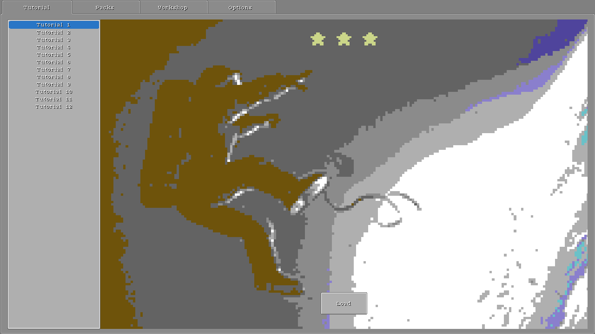
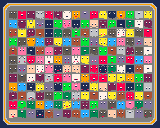
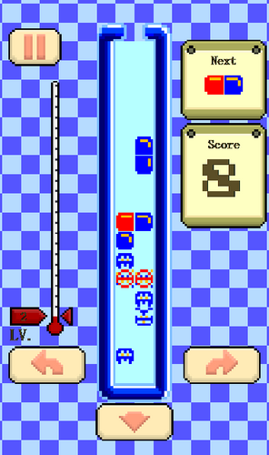

Steam | Itch | Twitter | GitHub
Creative kits

Bitty Engine - An itty bitty Game Engine, with built-in editors, programmable in Lua.

BASIC8 - An integrated Fantasy Computer for game and other program development. You can create, share and play disks in a modern BASIC dialect, with built-in tools for editing sprite, tiles, map, quantized, etc.

Crapht Box - A Fantasy Physics Sandbox, inspired by the Fantasy Console genre. It brings a simulated world with a number of disks and tools, and leaves you to play, program, create and share disks.
Tiny games and programs

Canned Monsters - Procedurally generated monsters in a sardines can.

Dice - A 3D dice program.

Tomato Garden - A Pomodoro time management application.

Capsule Rush - Match-three to eliminate virus.
Articles
Smooth Tile-based Movement Algorithm with Sliding - Movement is a very basic concept in video games, it could be as simple as accumulating steps to a position value. This article introduces a smooth movement algorithm with tolerant sliding, which offers good adaptivity to various tile-based scenes.